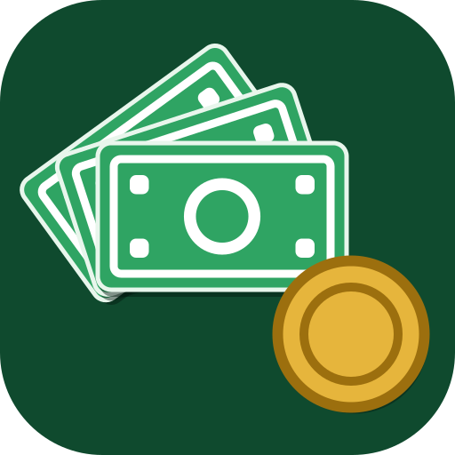

Cash CounterCash Counter is on the App Store as Count Money: Cash Calculator. Here is how it works.
Email bkdigitalleads@gmail.com and we reply within two business days. Say which iPhone and iOS version you have.
The Count tab is the count. Each note and coin has a row, largest first. Tap plus and minus, or tap the number in the middle to type it on the keypad; Next goes to the next row. The total stays at the bottom. The count is kept as you go, so closing the app does not lose it.
Hold a row to add a roll of coins (a bag in the UK) or a strap of notes at the usual bank count: for example 40 quarters, 50 dimes, or 100 notes. You can also clear the row from there.
Tap Add expected amount at the bottom, or the target button at the top. Enter what the till should hold, or pick Float + sales and enter the starting float and the cash sales. The count then says Short by, Over by, or Balanced.
Tap Save count, give it a name, a date and a note if you like, and save. History lists every count by day, with its till, total and over or short. Open one to see the rows, then Reopen to fix it or Duplicate to start a new count from it.
Settings, Tills: name each till (Front register, Bar, Safe) and set its usual float. Tap the till name at the top of the count to switch.
From a saved count, tap Deposit; or on the count, tap the three dots, Deposit helper. Set the float to leave. The app suggests which notes and coins to bank, largest first, and shows the deposit total and what stays in the till. It never suggests more of a note than you counted, and it leaves exactly the float whenever the notes and coins you have can make it.
On a saved count, tap Count sheet to see the page as it prints: every row, subtotals, total, expected, difference, till, date, note and lines to sign. Share it, print it, or save it to Files. Settings, Export history as CSV makes a file for a spreadsheet.
Counting is free with no limit, on one till, with your last three saved counts in History and your first count sheet. Pro keeps every count in History and adds more tills, every count sheet and CSV export, the deposit helper, your own rows and every currency: weekly with a free trial for new subscribers, yearly, or lifetime with one payment. Prices are shown in the app. A count is always saved; on the free plan older counts are kept on your iPhone and come back with Pro. On a new iPhone, tap Restore purchases in Settings. Manage or cancel a subscription in the Settings app, your name, Subscriptions.
No. Cash Counter adds up the numbers you type. It does not use the camera.
Yes. Every amount is kept in whole cents (or pence, or centavos) and added as whole numbers, so there is no rounding error.
US dollar, Canadian dollar, euro, pound, Australian dollar and Mexican peso. The first one follows your iPhone's region. You can hide notes and coins you never use, like the $2 note, in Settings, Rows on the count.
Yes, with Pro: Settings, Rows on the count, Add a row. You type its amount on the count and it adds to the total. The deposit helper leaves those rows out.
Yes, fully. Nothing is sent anywhere unless you share a count sheet or a CSV.
No. It is a calculator and a record of your counts. It gives no financial or tax advice.
Nothing is deleted. History shows the last three, and the rest stay on your iPhone until Pro is back. Tills and rows you made keep working.